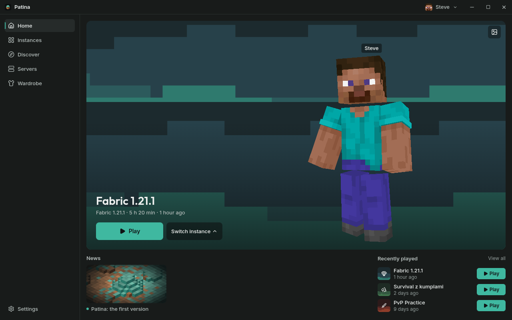
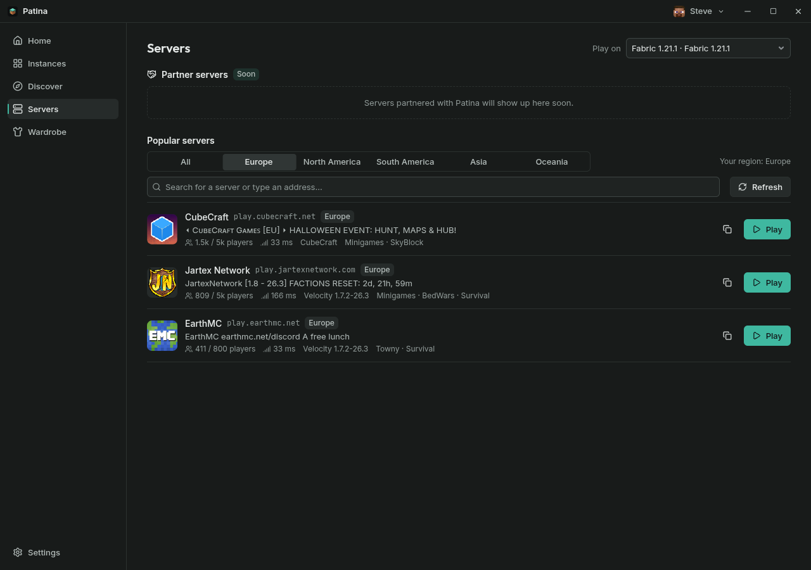
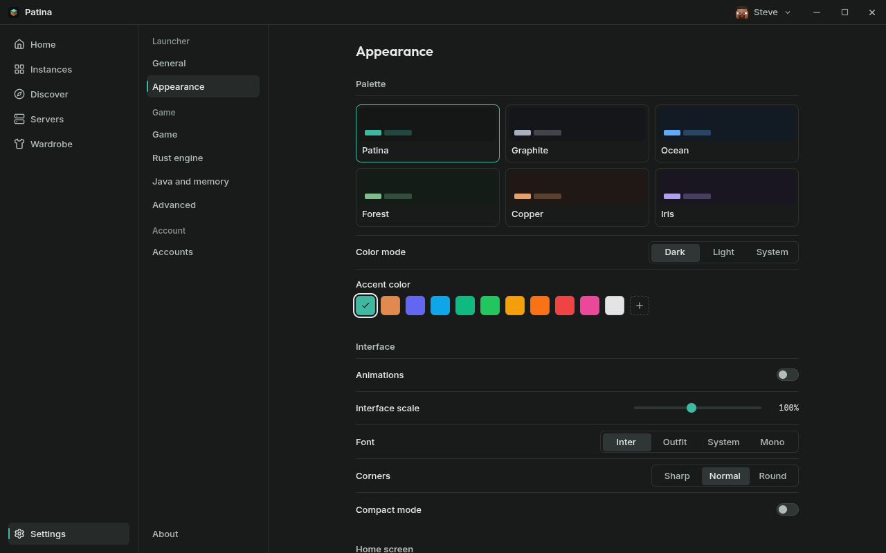
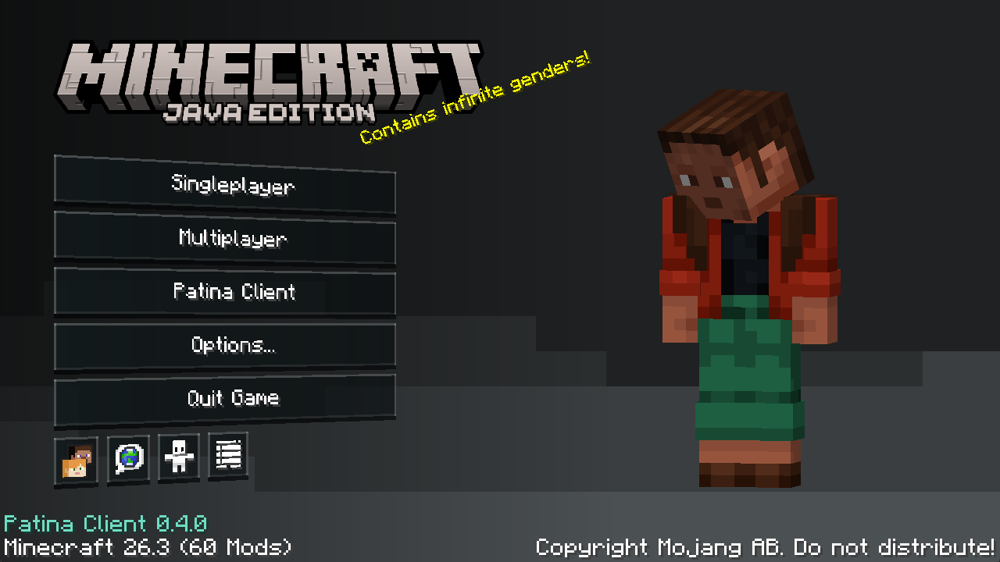
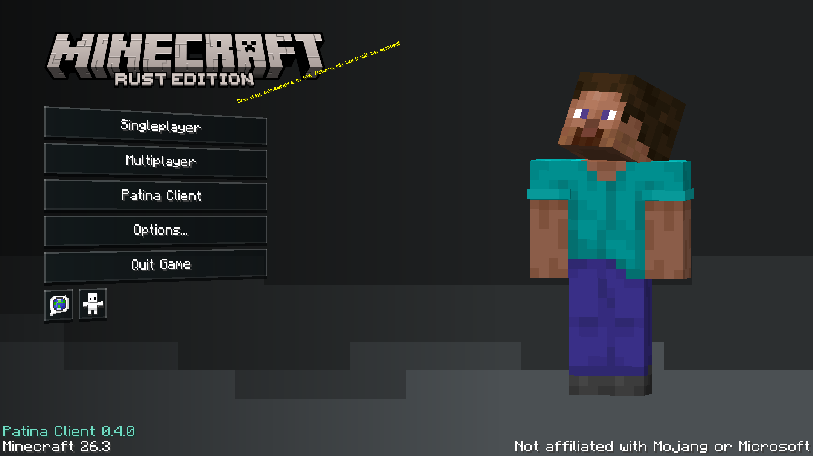
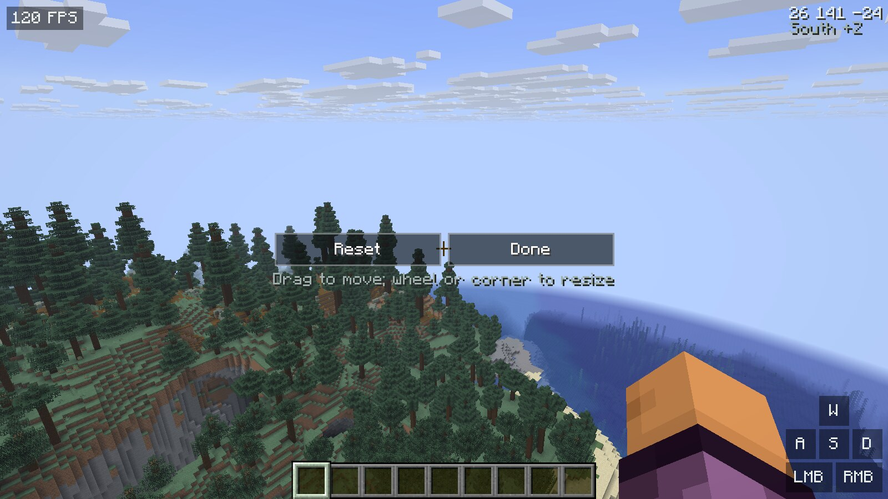
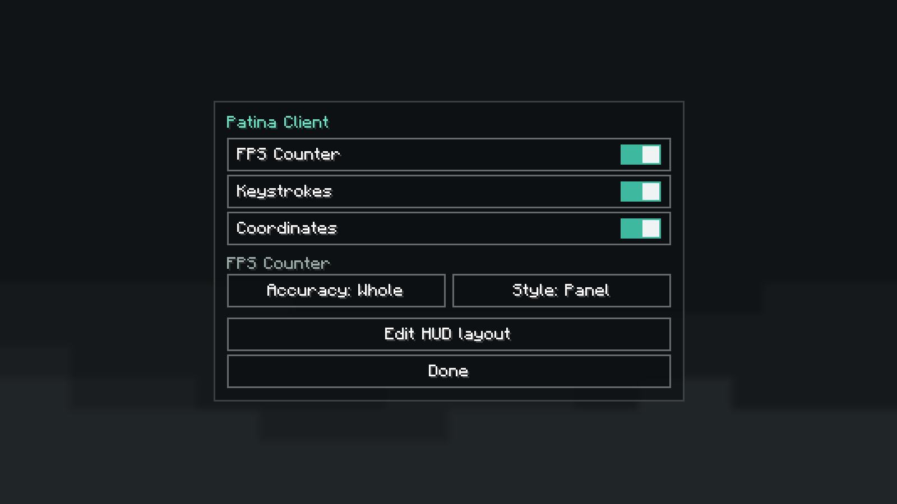
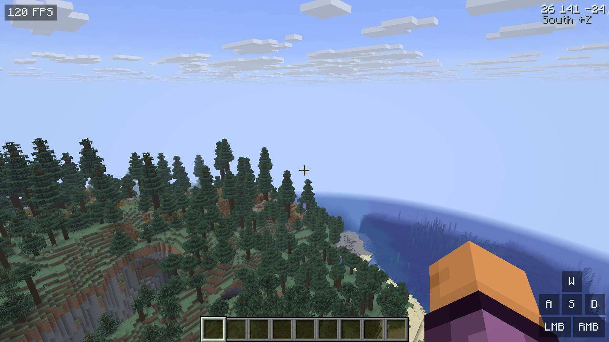

Patina to launcher Minecraft: Java Edition z własnym klientem — modem na Fabric i natywnym klientem w Rust, które wyglądają i działają tak samo.
Patina is a Minecraft: Java Edition launcher with its own client — a Fabric mod and a native Rust client that look and work the same.
Wymaga konta Minecraft: Java Edition. Wszystkie wersje:Needs a Minecraft: Java Edition account. All versions: GitHub Releases

Wszystko, czego potrzebujesz do gry, w jednym cichym oknie — bez reklam i bez zbędnych przycisków.
Everything you need to play, in one quiet window — no ads, no clutter.
Osobne instancje Fabric i Rust, każda z własną pamięcią, Javą i ustawieniami.
Separate Fabric and Rust instances, each with its own memory, Java and settings.
Popularne serwery z regionem, liczbą graczy i pingiem. Jedno kliknięcie i jesteś w grze.
Popular servers with their region, players and ping. One click and you are in.
Mody, paczki zasobów i shadery instalowane jednym przyciskiem.
Mods, resource packs and shaders installed with one button.
Konta Microsoft, skiny i peleryny z podglądem 3D.
Microsoft accounts, skins and capes with a 3D preview.


Ten sam klient w dwóch wersjach: jako mod na Fabric 26.3 i jako natywny klient w Rust oparty na Horizon. Menu, ustawienia i wbudowane mody wyglądają identycznie.
One client in two forms: a Fabric 26.3 mod and a native Rust client based on Horizon. The menu, settings and built-in mods look the same.
Przeciągnij licznik FPS, klawisze czy współrzędne prosto na grze. Rozmiar zmienisz kółkiem albo rogiem — co ustawisz, tam będzie.
Drag the FPS counter, keystrokes or coordinates right on the game. Resize with the wheel or the corner — what you place is where it shows.
Licznik FPS z 1% low, klawisze i współrzędne — bez instalowania czegokolwiek.
An FPS counter with 1% lows, keystrokes and coordinates — nothing to install.
Menu główne z Twoim skinem, płynnymi animacjami i ciemnym tłem launchera.
A main menu with your skin, smooth motion and the launcher's dark background.





launcher/patina. Windows: uruchom launcher\patina.exe.launcher/patina. Windows: run launcher\patina.exe.Patina nie jest jeszcze podpisana certyfikatem, więc SmartScreen może pokazać ostrzeżenie. Kliknij „Więcej informacji” i „Uruchom mimo to”. Kod jest w całości na GitHubie.
Tak. Patina gra tylko na oryginalnym koncie Minecraft: Java Edition i nie zawiera plików gry.
Klient Rust to osobny program napisany od zera (na bazie Horizon) — bardzo szybki, ale mody z Fabric w nim nie działają. Wersja Fabric to zwykły Minecraft z modem Patina, więc działa z innymi modami.
Patina is not code-signed yet, so SmartScreen may show a warning. Click "More info" and "Run anyway". All of the code is on GitHub.
Yes. Patina only plays with a genuine Minecraft: Java Edition account and ships no game files.
The Rust client is a separate program (based on Horizon) — very fast, but Fabric mods do not run in it. The Fabric version is regular Minecraft with the Patina mod, so it works with other mods.